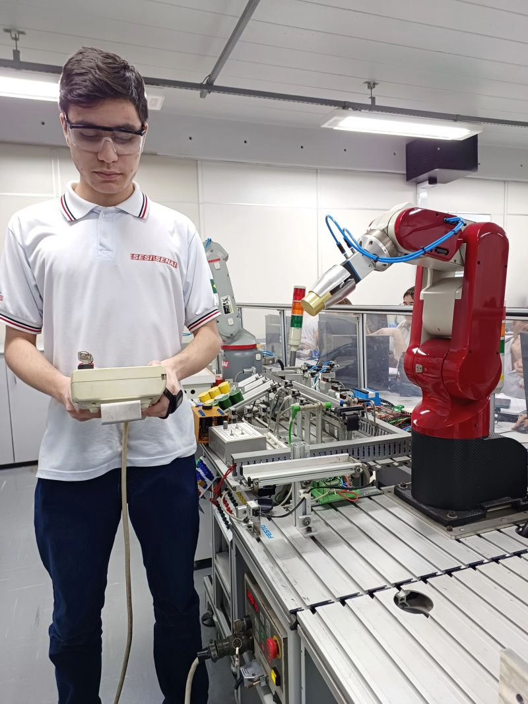
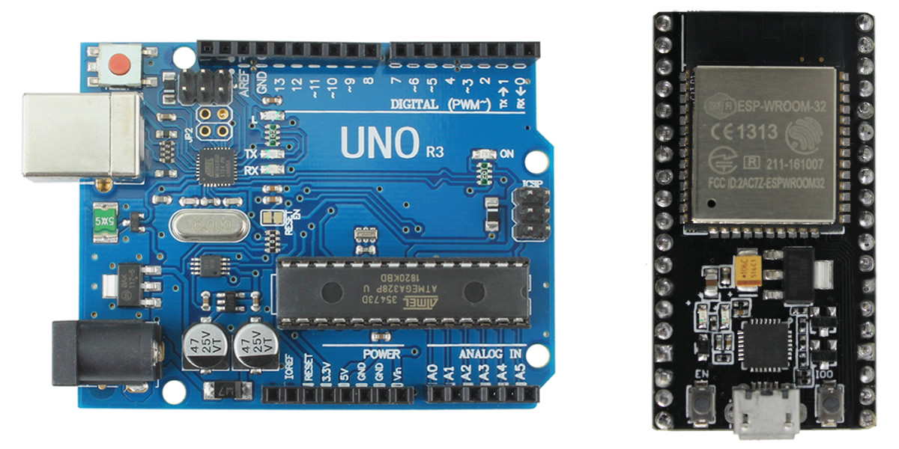
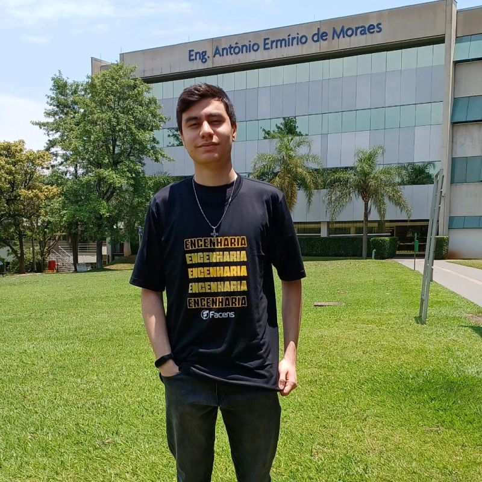

Home

João Vítor Martinelle
Sobre mim:
Minha jornada no SENAI, onde me formei como técnico em mecatrônica, me expôs a
situações
desafiadoras que me levaram a desenvolver estratégias e conhecimentos aplicáveis no mercado de trabalho.
Tenho uma afinidade especial pela área da informática, elétrica e programação
(inclusive com a linguagem Ladder aplicada em CLPs e a linguagem C em um âmbito geral,
ambas
exploradas durante o meu curso).
Somado a isso, possuo habilidades na elaboração de documentos em Word, na edição de vídeos e sou
eficaz
na comunicação diante de apresentações.

Além disso, tenho conhecimento básico em mecânica, sendo apto a interpretar e desenvolver
desenhos técnicos
utilizando o software SOLIDWORKS, o que me permite elaborar peças 3D.
Minha formação inclui ainda conhecimentos na área eletrônica, para a elaboração de projetos utilizando
placas de
prototipagem, como Arduino e ESP32.

Atualmente, estou cursando Engenharia de Computação no Centro Universitário Facens (segundo semestre). Espero que esta jornada seja repleta de novas experiências, desenvolvimento pessoal e aquisição de conhecimento.
